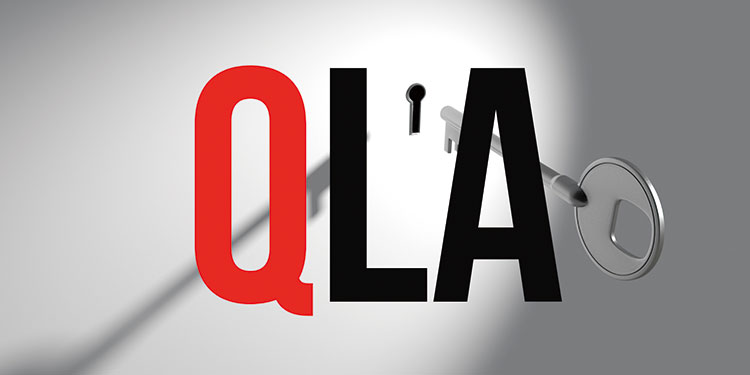

對丹(Dan Pena)的批評：正宗還是騙子？

丹‧佩納(Dan Pena)，全名Daniel S. Peña Sr.，是一位美國商人、企業家、人生導師以及企業指導。
他是多家公司的CEO，著有書籍，並創立了商業方法「量子躍遷法(Quantum Leap Method)」。他在他的15世紀蘇格蘭城堡 - 古思里城堡(Guthrie castle) - 裡教授QLA研討會。他的QLA研討會費用是一週2萬美元。
以下是Youtuber斯賓塞(Spencer Cornelia)在經過大量研究後對丹的批評，除了點出丹的行銷資訊真實性存疑外，也總結了QLA方法究竟是什麼。
https://www.youtube.com/watch?v=zv2VcEQhTXY
正宗還是騙子？一個關於虛張聲勢和自尊心的故事(影片內容翻譯)
如果我告訴你 - 一位在蘇格蘭城堡裡教授研討會的74歲男人讓我對我所知的男子氣概產生疑問…
丹(Dan Pena)：「…我可以一人打倒10個「雪花(snow flakes)」(泛指90後容易受傷、凡事都愛抗議的年輕自由派)…很多人來找我是因為我是他們從未有過的阿爾法父親(alpha male)(具主導性、強勢的男性父親角色)。」
正如許多網路營銷推手，丹需要保持一個特定的形象。他要你相信一個真正的男人應該是什麼樣子、怎麼說話、還有是怎麼做生意的。
他的行為可能讓很多人討厭 - 但這正是他想要的。他不在乎別人喜不喜歡他，他只想要人們尊重他。
丹利用「恐懼」讓你尊敬他。
在他的QLA研討會中，他不在乎把花一週2萬美元的參與者踢出去。
這些研討會的目標是改造不成功的你，讓你在離開城堡後能夠有和成功人士一樣的人格特質。
丹(Dan Pena)：「…我剛剛列出了5個過去150年中最成功的人，而他們都有一個共同點 - 他們是破壞者(形容非常強硬的性格)…」
踏出你的舒適圈
丹喜歡激怒他的學生，他想知道你什麼時候才會忍不住回擊。
他想要你永遠記住他是誰。
丹宣稱他從小就是這樣。他說他在洛杉磯東部貧窮的地區長大，說著和獅子玩耍、在酒吧和朋友打架鬧事的故事，說他是個叛逆的少年。
這些故事提醒了你他生長的年代 - 那個男人有他應有的樣子的年代。
丹成長的家庭像在軍中一樣，他的父親經歷過2次戰爭，因此利用紀律把他帶大。如果丹犯錯，被打是很正常的。
以一位強迫其他人踏出舒適圈的人來說，丹從沒有踏出他的舒適圈。他停滯在他的年代中。
現代的男人已經不像過去一樣擁有如此簡單的定義 - 堅毅、沒有情緒、強硬 - 現代的男人可以是非常多元化的。我們可以質問權威、討論我們的情感和失敗、以及視女人為同等地位。
發展和維持你的自尊心
丹(Dan Pena)：「…因為我以為每個人都有和我一樣的自尊心，我以為每個人都有和我一樣的自信心。我以為每個人的父親都是個男人。我錯了…」
丹的目標是成為最棒的。不是經營最棒的生意，不是成為最棒的商人，而是成為最棒的企業指導。
丹對自己的自信是無庸置疑的，但如果他認為自己是男人的榜樣，為什麼他需要虛張聲勢？
現在，他是一位教育者和推銷員。他唯一的生意是在他的城堡舉行研討會，並且是他舊學生的導師，包括其中一位連提都不用提的人(Dan Lok，因為他被許多人指控詐騙，研討會費用昂貴又沒有提供任何幫助)。
他利用學生的成功作為他自己的天分和凈資產的指標，所有學生在未來賺的資金全都計算到丹的「財富記分板」上。
丹(Dan Pena)：「…我有像他一樣的學生…自1993年創造了7千7百50億美元…在交易中、買賣公司、公司上市…」
對我而言，男子氣概是內在的自信，不需要外在的認同。內在的自信來自於過去的經驗、成功，與外在無關。
如果一個人有自信，就不需要外在世界證實。
如果我們用這個指標來判定男子氣概，為什麼丹總是需要利用他學生的成功作為行銷標語，把它說得像是自己的淨資產？我認為這是沒有自信的跡象。
如果他真的是企業領袖，為什麼他沒有建立多個的企業，然後用自己的成功當作行銷標語？
設立貪心的目標和擁有大夢想
研討會的目標是讓你相信你可以在3到7年內產生一代的財富，你可以透過QLA方法達成。
就像任何網路營銷推手一樣，丹要你相信你可以用他的系統在幾年內從無腦糞桶變成商業菁英。這是為什麼很多人認為丹是騙子，因為我們已經開始意識到這些網路營銷推手怎麼讓我們著迷、讓我們打開我們的錢包並且在完成他們的教育產品後感到黯然神傷。
但丹的計劃是不一樣的。他說得很清楚，只有少數的人能成功。QLA本身就是一個只有少部分的人有能力實現的系統。
丹(Dan Pena)：「…你知道為什麼我背痛嗎？因為20年我背著你們的大屁股走向終點…」
他經常說他學生的成就系統有用的證明。擁有大夢想。多大？在丹的研討會後一年內實現百萬美元的交易。
我可以點出他的舊學生有著可疑的道德標準、是個騙子(Dan Lok)、還有沒有成功的舊學生。
但丹從來沒有宣稱每個人都會成功。擁有大夢想吧，也許會發生在你身上。
像激光束一樣的專注
我忍不住像激光束一樣的專注在丹的眨眼上，我想他是贏不了瞪眼比賽了。
Psychology Today(美國著名心理學網站)研究顯示如果我們感到緊張或不平靜，眨眼的頻率會上升。這個現象常在騙子或壓力下的人上看到。丹似乎在訪談中談到他生意上的成功和他賺多少錢時常常眨眼。不過你還是自己出主意吧。
有一件事是清楚的 - 丹總是虛張他和他的學生的成功。
他宣稱他用820美元變成4億5千萬美元。他的公司在最高點時的市值為4億5千萬美元，意味著這個企業本身值4億5千萬美元。他有至少一位合夥人，大概有多位股權合夥人。他的QLA方法圍繞著夢幻團隊以及和一群人分享股權，這樣很多人可以一起在公司的收益中分一杯羹。
我提這一點是因為當他說他的公司值4億5千萬美元時，他可能只有20%的股權，這意味著他只有9千萬美元。他經常用最大的數字來「仔細地說明」他的成功，因此我認為這麼假設是合理的。
他也許有成功的地方，但是他為什麼總是要虛張收入和淨資產來滿足他的自尊心？
丹(Dan Pena)：「…我的初始基礎是…就說是1000美元好了。我離開時是5億美元…因為我有很多股東，所以不是只有我…」
丹提到他在公司成立10年後有矛盾產生，所以90年代初期他已經不在公司了。根據Relationship Science(公司資料與關係網站)，Sabine Oil & Gas Holdings在1997年1月以4千8百萬美元買下Great Western Resources(丹的公司)。這只是說明在網路上談的數字可能不如實際上這麼大。
丹的資產不如他所宣稱的那麼多。他賺到錢嗎？當然，而且很多，在Great Western公司前他也很成功。他似乎想嘗試什麼都能成功。但這部影片是想從這些社交平台名流身的宣稱上尋求透明性，而我在這裡看不到。
體現QLA方法
QLA是什麼呢？他們並不多談。
丹的方法基本上是向苦惱的業主購買企業，然後用百分之百的槓桿來買，不花自己的一毛錢。
聽起來很令人感到困惑，對嗎？
如果你像我一樣為這部影片做那麼多的研究你就不會感到困惑了。
QLA方法

步驟1：找一個行業 找一個你想目標的行業。  步驟2：建立你的夢幻團隊 用在這個行業中有幾十年經驗的人 - 像是董事、管理階層的人、律師等 - 來建立你的夢幻團隊。 步驟3：找到怨天尤人的業主 找到怨天尤人、有興趣賣企業的業主。 步驟4：提供以賣方融資的方式購買企業 向這位苦惱的業主提供以賣方融資的方式購買企業。 步驟5：利用商業貸款和賣方融資買下企業 利用商業貸款和賣方融資組合向業主買下企業。 步驟6：以股權支付你的夢幻團隊 以股權的方式來支付你的夢幻團隊和你自己。
步驟2：建立你的夢幻團隊 用在這個行業中有幾十年經驗的人 - 像是董事、管理階層的人、律師等 - 來建立你的夢幻團隊。 步驟3：找到怨天尤人的業主 找到怨天尤人、有興趣賣企業的業主。 步驟4：提供以賣方融資的方式購買企業 向這位苦惱的業主提供以賣方融資的方式購買企業。 步驟5：利用商業貸款和賣方融資買下企業 利用商業貸款和賣方融資組合向業主買下企業。 步驟6：以股權支付你的夢幻團隊 以股權的方式來支付你的夢幻團隊和你自己。
我覺得有趣的地方在於QLA的重點是使用QLA方法，但他自己不用。他只有過一個成功的公開企業，而且最終離開了，離開後他開始教課。
這通常是某人教課賺的錢比實現他們教的東西所賺的錢要來的多的徵兆。
結論是我享受Youtube上的QLA研討會，學習買企業的新方法，而且丹的一些咆哮很幽默。
我想他作為導師的成功是值得讚許的，不過我對他的營銷炒作沒有什麼興趣。
Archives
Categories
Alternative investments Alternative investments for beginners Bonds Commodities Commodities for beginners Cryptocurrency Forex Forex for beginners Futures Futures for beginners Gold Inspirations Invest in gold for beginners Invest precious metals for beginners Investment for beginners Investment funds for beginners Precious metals Real estate Stocks Stocks for beginners Wealth managementTags